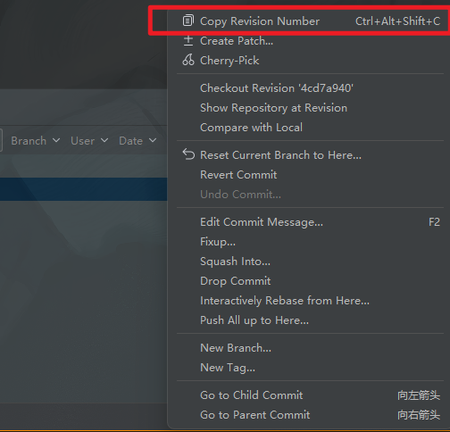
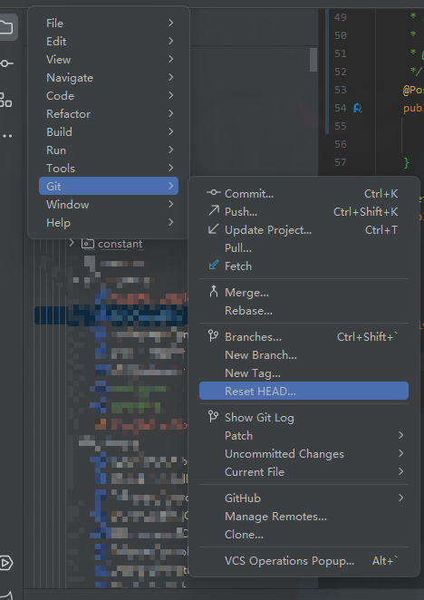

问题
在我们使用git的时候, 有时候可能某些功能代码不需要了, 或者版本, 或者误提交之类的, 需要将远程的代码回退到某个特定的版本
因为涉及大量代码的修改, 导致一个个的文件改回再提交的话会非常麻烦
这里记录了在Intellij Idea中回滚远程代码的操作
回滚操作
1. 回滚本地代码
先复制要回滚的版本号


然后选择菜单懒 Git->Repository->Reset HEAD


Reset Type 有三种：
mixed 默认方式，只保留源码，回退 commit 和 index 信息 soft 回退到某个版本，只回退了 commit 的信息，不会恢复到 index file 一级。如果还要提交，直接 commit hard 彻底回退，本地源码也会变成上一个版本内容
此时我们选择 Hard 彻底回退, 填入版本号, 点击 Reset 就能将本地代码版本回滚到指定版本。


2. 回滚远程代码
第一种，直接强制提交，使用 git 命令提交 git push -f，但是这样会把回滚版本之后的提交记录全部删除，因此不建议这样做。
第二种，用前面我们回滚本地的方式，再次回滚到最新版本。
跟之前一样的操作, 不过是最新的版本号.
再次 Git->Repository->Reset HEAD, Reset Type 采用 Mixed 方式将源码保留，然后点击 Reset。
此时代码已经是旧版本的代码，并且版本还是最新版本，此时正常提交 push 后本地和远程代码的回滚就完成了。